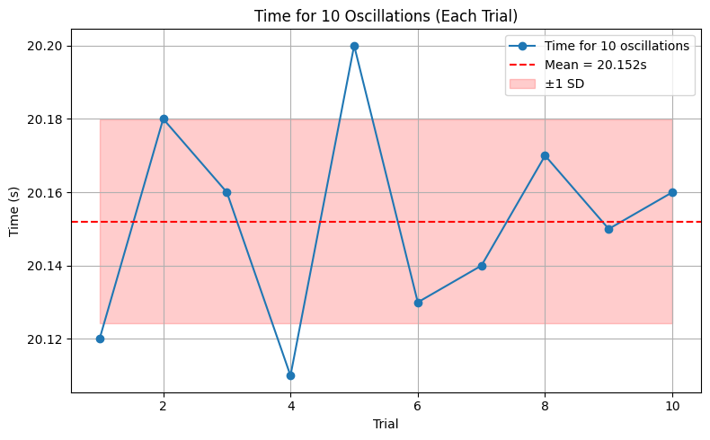
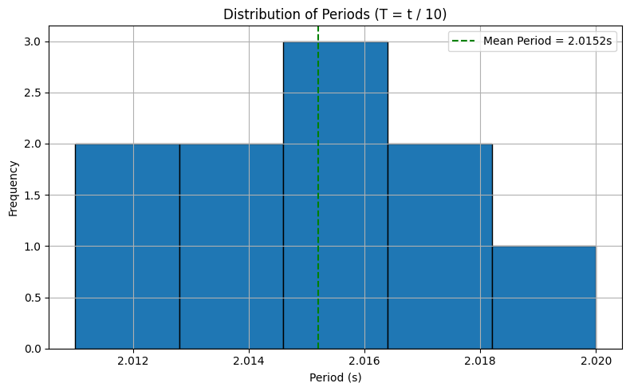
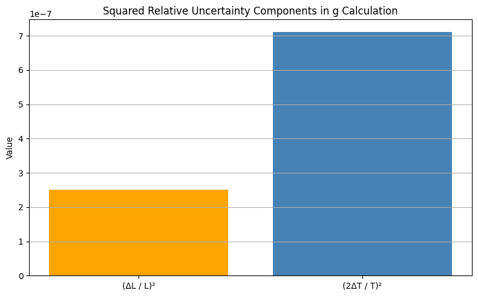
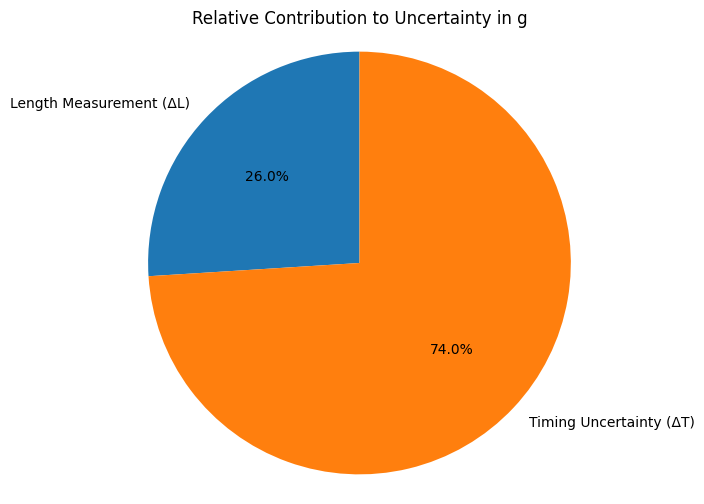

Problem 1
Pendulum Experiment: Measuring Earth's Gravitational Acceleration
Materials Used
- String: 1.00 m
- Small weight: keychain
- Stopwatch: smartphone (resolution = 0.01 s)
- Ruler: resolution = 0.001 m (1 mm)
Procedure
1. Measuring Length (\(L\))
Measured length from suspension point to center of mass of the weight:
- \(L = 1.000 \ \text{m}\)
- Ruler resolution: \(0.001 \ \text{m}\)
- Uncertainty in length:
\(\(\Delta L = \frac{0.001}{2} = 0.0005 \ \text{m}\)\)
2. Time Measurement: 10 Oscillations
| Trial | Time for 10 Oscillations \(T_{10}\) (s) |
|---|---|
| 1 | 20.12 |
| 2 | 20.18 |
| 3 | 20.16 |
| 4 | 20.11 |
| 5 | 20.20 |
| 6 | 20.13 |
| 7 | 20.14 |
| 8 | 20.17 |
| 9 | 20.15 |
| 10 | 20.16 |
Data Summary
-
Mean time for 10 oscillations:
\(\(\overline{T_{10}} = 20.152 \ \text{s}\)\) -
Standard deviation:
\(\(\sigma_T = 0.027 \ \text{s}\)\) -
Uncertainty in mean time:
\(\(\Delta T_{10} = \frac{0.027}{\sqrt{10}} \approx 0.0085 \ \text{s}\)\)


Calculations
1. Period and Its Uncertainty
-
Period of one oscillation:
\(\(T = \frac{20.152}{10} = 2.0152 \ \text{s}\)\) -
Uncertainty in period:
\(\(\Delta T = \frac{0.0085}{10} = 0.00085 \ \text{s}\)\)
2. Calculating \(g\)
Using the pendulum formula:
\(\(g = \frac{4\pi^2 L}{T^2}\)\)
Substitute values:
\(\(g = \frac{4\pi^2 (1.000)}{(2.0152)^2} \approx 9.719 \ \text{m/s}^2\)\)
3. Uncertainty in \(g\)
Relative uncertainty in \(g\):
\(\(\frac{\Delta g}{g} = \sqrt{\left(\frac{\Delta L}{L} \right)^2 + \left(2 \cdot \frac{\Delta T}{T} \right)^2}\)\)
Substitute values:
\(\(\frac{\Delta g}{g} = \sqrt{\left(\frac{0.0005}{1.000} \right)^2 + \left(2 \cdot \frac{0.00085}{2.0152} \right)^2}\)\)
- Absolute uncertainty in \(g\):
\(\(\Delta g \approx 0.00098 \cdot 9.719 \approx 0.0095 \ \text{m/s}^2\)\)

Final Results
| Quantity | Value |
|---|---|
| Length \(L\) | \(1.000 \ \text{m}\) |
| Uncertainty \(\Delta L\) | \(0.0005 \ \text{m}\) |
| Mean \(T_{10}\) | \(20.152 \ \text{s}\) |
| Std Dev \(\sigma_T\) | \(0.027 \ \text{s}\) |
| Uncertainty \(\Delta T_{10}\) | \(0.0085 \ \text{s}\) |
| Period \(T\) | \(2.0152 \ \text{s}\) |
| Uncertainty \(\Delta T\) | \(0.00085 \ \text{s}\) |
| Calculated \(g\) | \(9.719 \ \text{m/s}^2\) |
| Uncertainty \(\Delta g\) | \(\pm 0.010 \ \text{m/s}^2\) |
Discussion
1. Comparison with Standard \(g = 9.81 \ \text{m/s}^2\)
- Measured value: \(g = 9.719 \pm 0.010 \ \text{m/s}^2\)
- Difference: \(9.81 - 9.719 = 0.091 \ \text{m/s}^2\)
- Percentage error:
\(\(\frac{0.091}{9.81} \times 100\% \approx 0.93\%\)\)
The result is within 0.9% of the standard value — reasonably accurate.
2. Uncertainty Sources and Impact
- Length Measurement (\(\Delta L\)): Very small due to high ruler resolution — negligible effect.
- Timing Uncertainty (\(\Delta T\)): Main contributor to error. Human reaction time (~0.1s) is reduced by averaging over 10 oscillations.
Assumptions:
- Small-angle approximation (<15°) holds.
- No air resistance or friction considered.
- Mass of the string is negligible.

Conclusion
This experiment effectively measures the gravitational acceleration with decent accuracy. The dominant uncertainty arises from timing, reinforcing the importance of reducing human error through averaging and repeat trials.